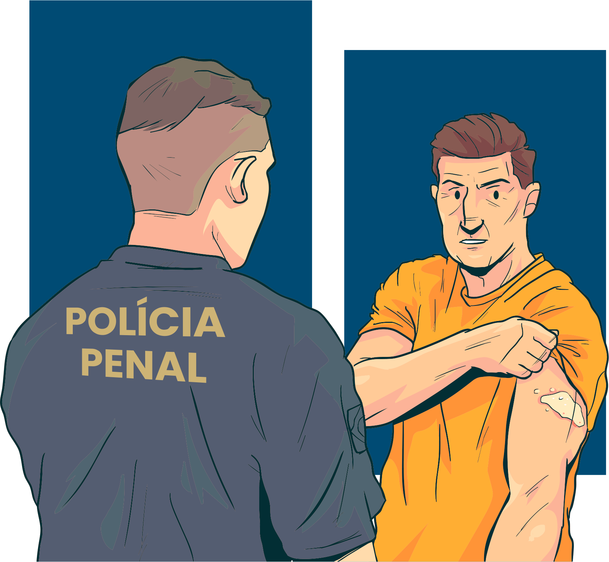

Como você, servidor do sistema prisional, que não é da área da saúde, pode ajudar no controle e prevenção desse agravo?
Caso sua unidade prisional não possua uma busca ativa para hanseníase, se você identificar alguém com lesões de pele suspeitas, perda de sensibilidade para calor, dor ou sensibilidade ao toque, acompanhe essa pessoa ao setor de saúde da unidade ou comunique às autoridades responsáveis para que se possa entrar em contato com as unidades de atenção secundária ou terciária, nas quais se possa referenciar esse indivíduo.